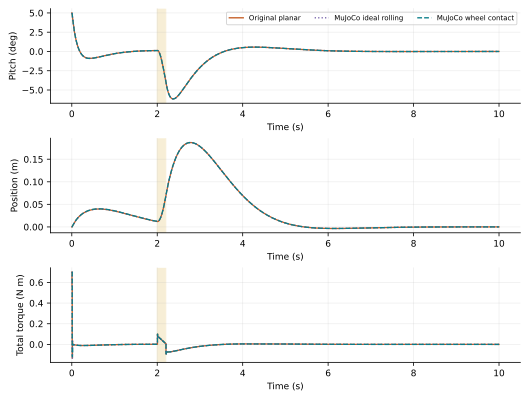
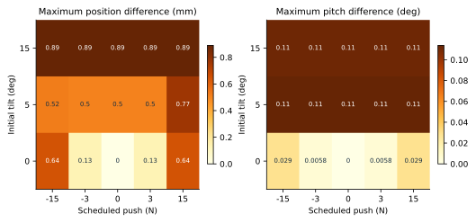
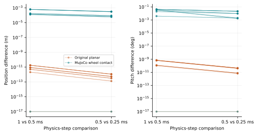

MICHAEL AGBO / MUJOCO VERIFICATION
MuJoCo verification and wheel-contact discrepancy in a balancing robot
Scope and principal findings
This supplement adds an independently assembled MuJoCo model to the existing nominal, unloaded balancing-robot study. It distinguishes equation verification under ideal rolling from the discrepancy introduced by a free-body robot with wheel-ground contact. No controller tuning or parameter fitting is performed. The study is deterministic and simulation-only; it does not validate the robot against hardware.
All 15 ideal-rolling trajectory checks pass the declared componentwise tolerance of 1e-7 in each coordinate's native units. A separate 48-condition acceleration check has maximum errors 2.66e-15 m/s² and 1.42e-14 rad/s². The independently compiled multibody model therefore reproduces the stated equations to numerical precision for the evaluated cases.
At the finest native-contact resolution (0.25 ms), 15/15 outcome labels match the original planar model and 15/15 conditions pass the declared full-horizon discrepancy screen. Across common pre-fall horizons, maximum position and pitch differences are 0.0008901 m and 0.1138 deg. These differences are model-discrepancy measurements, not measured physical errors.
| Model | Recovered | Unsettled | Fallen | Total |
|---|---|---|---|---|
| Original planar | 15 | 0 | 0 | 15 |
| MuJoCo ideal rolling | 15 | 0 | 0 | 15 |
| MuJoCo wheel contact | 15 | 0 | 0 | 15 |
The 150 integrations comprise 45 original-planar runs, 15 reduced MuJoCo runs, 45 nominal native-contact runs and 45 additional contact-sensitivity runs. Repeated step sizes and contact variants are numerical/configuration repetitions of 15 conditions, not independent experimental samples. The original manuscript and payload/noise supplements are preserved.
All 15 nominal conditions recover in both models. This grid therefore checks agreement within the tested recovery region; it does not test agreement at a fall boundary or validate prediction of failure. Boundary-focused conditions must be evaluated separately.
1 Matched protocol and model construction
The full Cartesian grid combines initial tilt 0, 5 and 15 deg with horizontal COM pushes -15, -3, 0, 3 and 15 N. Each nonzero force is held from 2.00 to 2.20 s. The maximum duration is 10 s. Gains are copied from config.json without redesign, ideal state feedback updates every 5 ms, and total two-motor torque is clipped to +/-0.70 N m.
| Quantity | Value | Interpretation |
|---|---|---|
| Body mass / base mass | 1.2 / 0.35 kg | Base mass includes both wheels |
| Body COM above axle | 0.18 m | Push acts at body COM |
| Body pitch inertia | 0.012 kg m² | About body COM |
| Wheel radius / spin inertia | 0.045 m / 0.00012 kg m² | Inertia is per wheel |
| Translation / rotation drag | 0.08 / 0.002 | N s/m and N m s/rad |
| Gravity / total mass | 9.81 m/s² / 1.55 kg | Same in each model |
The reduced MuJoCo assembly has a base X slide and a torso Y hinge. The slide carries a reflected wheel-spin mass 2 Iw/r² through its armature. A common motor command produces generalized forces [u/r, -u]; a horizontal force on the torso COM supplies both translation and pitch moment. Joint damping implements the original drag terms. This uses MuJoCo rigid-body dynamics to check the original implementation, while deliberately retaining its assumptions.
The native model instead has a floating base and two wheel hinges. Its base mass is split into 0.11 kg chassis and two 0.12 kg wheels. It adds chassis pitch inertia 0.0002 kg m², uncalibrated roll/yaw inertias and 0.23 m wheel-centre spacing. Newton contact solving, an elliptic cone, condim 4, sliding friction 1.0, torsional friction 0.005 and solref [0.005, 1] define the nominal contact model. The rolling-friction entry is inactive with condim 4. These are explicit assumptions, not identified material properties [1,2].
The native axle starts at z = 0.0452 m with zero velocity and no warm-up. World X is forward and positive pitch is forward lean. Both wheel motors receive u/2. Native drag acts as a world-X force on the base and world-Y torque on the torso. Its state-dependent drag is refreshed each physics step. The launcher smoke test is not reused as research data.
2 Equation and ideal-rolling trajectory verification
![Maximum trajectory residuals between the independently assembled MuJoCo ideal-rolling model and the original equations. Both use RK4 with 1 ms physics steps and 5 ms held controls. Conditions are ordered by increasing initial tilt (0, 5, 15 deg), then push (-15, -3, 0, 3, 15 N). Each coordinate is compared in its stated units over the shared pre-fall horizon. Exact zeros are displayed at 1e-17 for logarithmic plotting. This checks implementation equivalence of the same assumptions, not physical accuracy.](../../publication/figures/mujoco_fig01_equivalence.svg)
The acceleration test spans 3 angles, 2 translational speeds, 2 pitch rates, 2 motor torques and 2 push forces (48 combinations). Motor generalized-force signs and scaling are checked separately. The largest componentwise trajectory errors are [9.44e-16, 4.88e-15, 6.66e-16, 7.99e-15] in [m, m/s, rad, rad/s]. Every reduced/original pair has the same outcome.
Independent assembly helps detect algebra, inertia, force-location and actuator-convention errors. It cannot validate omitted physics: both ideal-rolling implementations intentionally share the same mechanical assumptions and parameter values. Passing this check supports numerical implementation correctness within this scope.
3 Preselected closed-loop example

The original and reduced models use RK4. The native model uses implicitfast with compliant contacts. All controller updates remain at 200 Hz when physics resolution changes. A force pulse is indexed by integer control ticks, avoiding floating-point ambiguity at its start and end. A completed nonzero-push run contains exactly 40 forced control intervals.
4 Cross-model discrepancy and outcome agreement

Before executing the grid, the engineering screen was set to maximum position difference <=0.01 m, maximum pitch difference <=0.5 deg, matching three-way outcomes, and a full shared 10 s horizon. These limits are practical study criteria; they are not established physical-accuracy standards. Every planned condition remains in the denominator, including any fall before the scheduled push.
15/15 finest-resolution nominal contact cases pass that screen; 0 do not. Outcome agreement alone (15/15) does not imply trajectory equivalence. A failed screen is retained as a result, without retuning gains or fitting friction after seeing the output. For any early fall, errors are explicitly restricted to the common observed horizon.
Fall detection occurs at 5 ms endpoints when absolute pitch reaches 45 deg; the native model also checks roll. A surviving run is recovered only if its final continuous dwell of at least 1 s satisfies |pitch| <=1 deg, |x| <=0.03 m and |vx| <=0.03 m/s, after the pulse ends when nonzero. These rules reproduce the existing planar study. Native lateral drift and yaw are monitored but are not recovery criteria, so this label does not certify general 3D pose recovery.
5 Physics-step sensitivity

Halving native physics steps from 0.5 to 0.25 ms changes 0/15 outcome labels. The largest shared-horizon changes are 0.0003216 m and 0.02145 deg. The 1-to-0.5 ms comparison and both original RK4 refinements are also archived. Fixed control timing separates physics-step effects from changes in feedback bandwidth.
Contact switching and saturation may amplify small trajectory changes. The smallest tested step is a numerical reference for this study, not an exact solution. The analysis does not infer that smaller integration error eliminates model discrepancy or that a contact parameter is physically correct because it agrees with an ideal-rolling model.
6 Contact, slip and out-of-plane diagnostics
![Preselected 5 deg, +3 N example at 0.25 ms. The upper panels show the first 80 ms; roll shows the full run on a fixed scale, without amplifying round-off fluctuations. Rolling residual is wheel-centre world X velocity minus radius times absolute world Y angular velocity. This nearly planar diagnostic includes contact-free wheel spin and is not general 3D contact-point slip. Telemetry is sampled every 5 ms. The axle starts 0.2 mm above the radius with no warm-up, so the transients include contact engagement. Roll is not controlled.](../../publication/figures/mujoco_fig05_contact.svg)
Across the 15 nominal native runs at 0.25 ms, the largest sampled longitudinal rolling residual is 0.6338 m/s, including contact-free wheel spin. Restricting samples to nonzero total contact count gives 0.1618 m/s. Maximum sampled roll is 2.582e-07 deg and lateral travel is 1.845e-09 m. These are 200 Hz sampled maxima, not substep bounds. World-frame wheel velocities use the MuJoCo object-velocity API [3].
This grid excites sagittal balancing with symmetric wheel commands. Small roll or lateral motion in these trials is expected from symmetry and does not demonstrate lateral robustness. Off-axis forces, unequal wheel torque, uneven ground and payloads require additional experiments. The ideal model has no normal contact compliance, vertical motion or wheel slip with which to compare these channels.
7 Contact-parameter sensitivity
![Contact sensitivity at 0.5 ms. Nominal sliding friction is 1.0 and contact time constant is 5 ms; each variant changes one parameter. Left: outcomes over the same 15 conditions. Right: peak longitudinal rolling residual per trial, using only 5 ms samples with nonzero total contact count. This supplementary diagnostic excludes contact-free wheel spin but is not a general contact-point slip measurement. Every condition contributes; horizontal offsets distinguish conditions and black bars show medians. These are deterministic inventories, not confidence intervals.](../../publication/figures/mujoco_fig06_sensitivity.svg)
| Variant | Changed labels | Screen passes /15 | Max position diff. (m) | Max pitch diff. (deg) |
|---|---|---|---|---|
| Nominal | 0 | 15 | 0.001159 | 0.1128 |
| Friction 0.5 | 0 | 10 | 0.003489 | 0.7896 |
| Friction 1.5 | 0 | 15 | 0.001159 | 0.1128 |
| Contact 10 ms | 0 | 15 | 0.001245 | 0.1338 |
Only one contact parameter changes in each variant. Interaction effects, solver-tolerance sensitivity, alternative geometries, startup warm-up and mass-property uncertainty remain untested. No variant is selected as the physical truth or promoted as an improved controller.
8 Reproducibility, interpretation and next experiments
Software: MuJoCo 4.0.1, NumPy 2.5.4, Python 3.14.2, Windows-11-10.0.26300-SP0. validation_protocol.json fixes the grid and criteria. study.json contains settings, per-trial metrics, pairwise errors, step refinements and source SHA-256 hashes. trajectories.npz retains all 150 sampled trajectories with explicit column units; report_content.json and the LaTeX source preserve editable prose.
Reproduction from the project root: run mujoco_lab/.venv/Scripts/python.exe mujoco_lab/validate.py, followed by publication/.venv/Scripts/python.exe publication/build_mujoco_report.py. The second command verifies the recorded source hashes before building figures and reports. The MuJoCo and publication environments stay separate. The archive excludes virtual environments and transient viewer state.
The results support a bounded statement: the original nominal equations pass an independent MuJoCo assembly check on the declared cases, and a specific free-body/contact realization has a measured discrepancy under the same fixed controller. They do not support hardware validation, a general stability guarantee, a full 3D controller claim, payload robustness, or a new control-method contribution. No measurements or experimental results have been invented.
Next, extend the simulation comparison to prespecified conditions near the fall boundary. Identify wheel radius, masses, COM, pitch inertia and torque limits from a physical design or robot; characterize motor response and wheel-floor traction; then freeze a held-out validation protocol. Add explicit chassis-inertia and startup-contact ablations before attributing any native/planar difference solely to slip. After the nominal mapping is understood, repeat the payload-aware comparison with matched loaded mass properties. Keep calibration cases separate from validation cases and report disagreements.
References
[1] MuJoCo XML Reference: joint armature, actuators and contact dimensions. Accessed 12 November 2026. Source
[2] MuJoCo Computation: rigid-body dynamics, contact constraints and integrators. Accessed 12 November 2026. Source
[3] MuJoCo API Functions: mj_objectVelocity. Accessed 12 November 2026. Source